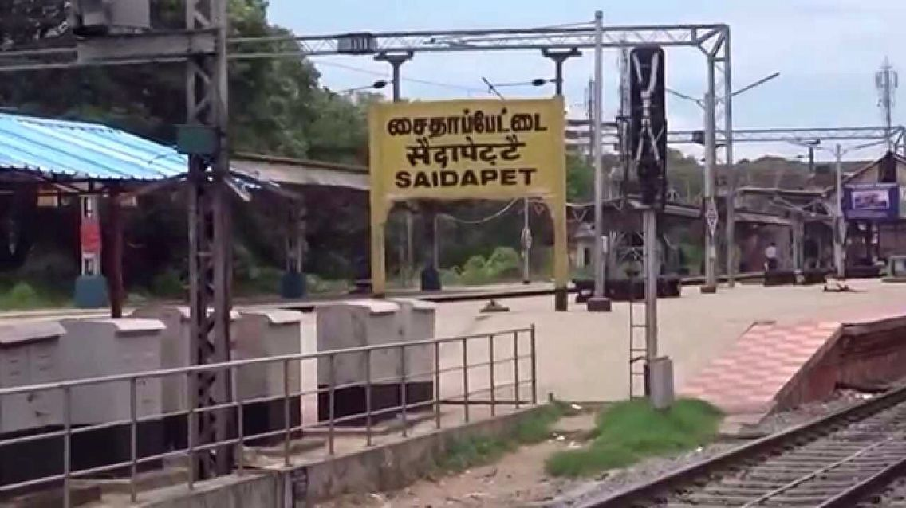

Chennai-Saidapet:-

Description of Saidapet:
Saidapet is one of Chennai’s oldest and most important neighbourhoods, known for its mix of tradition, commerce, and strong connectivity. Located along Mount Road and close to Guindy, it serves as a major gateway between South and Central Chennai. The area is well-connected through the Saidapet Railway Station, Metro Station, and a busy bus terminus, making it a key transport hub.
Saidapet is also home to the historic Kaaraneeswarar Temple, bustling markets, government offices, and educational institutions. The neighbourhood has a lively atmosphere with small shops, eateries, and residential colonies spread across its streets. With both heritage landmarks and modern facilities, Saidapet remains a vibrant and centrally located part of Chennai.